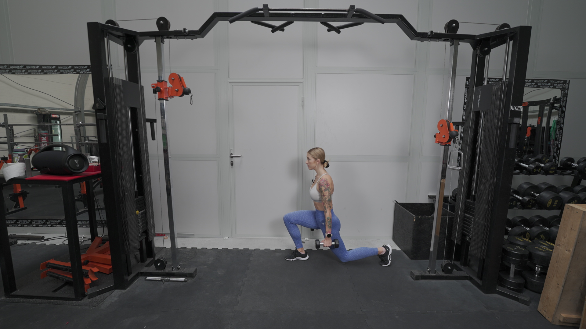
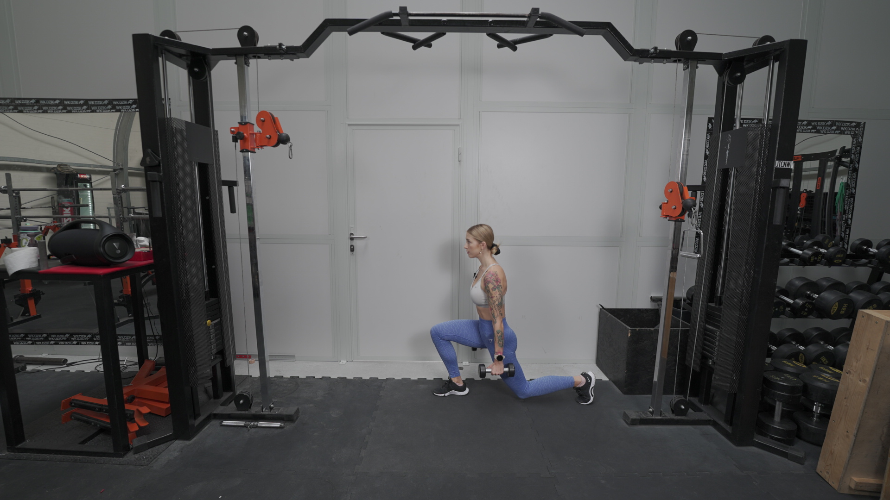

WYKROKI CHODZONE
 

1. Stań na szerokość bioder i napnij brzuch.
2. Rozpocznij ruch wysuwania jednej nogi w przód, do pozycji wykroku. Kolano kieruj na zewnątrz.
3. Głowa powinna stanowić przedłużenie tułowia.
4. Obniż kolano drugiej nogi do ziemi, ale nie uderzaj nim o podłoże.
5. Powracając do pozycji pionowej, podnieś kolano znajdujące się bliżej ziemi i unieść całą sylwetkę. Nie odstawiaj stopy na ziemię, od razu wykonaj tą nogą wykrok.
Jeśli wykonujesz to ćwiczenie z ciężarem, pamiętaj aby dodatkowo mocno spiąć łopatki.